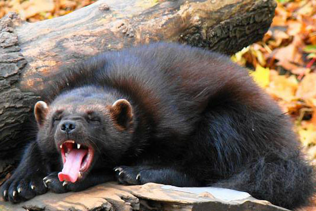

Welcome to Our Website
About Us
Our Services
Gallery
Contact Us

Rosomák Sibiřský: Jedná se o silného masožravce, který připomíná spíše malého medvěda, Má reputaci zuřivého a silného zvířete, jeho schopnost ulovit mnohem většího živočicha. obývá především území tajgy a tundry severní polokoule,

Vlk obecný:bJe velká psovitá šelma. Postupná domestikace tohoto druhu vedla k vydělení poddruhu Canis lupus familiaris – psa domácího. Původně byl vlk rozšířen po celé severní polokouli, nyní je jeho výskyt omezen
Liška obecná

Liška obecná. Je nejrozšířenější divoce žijící zástupce šelem. Zajímavostí je, že je extrémně nebezpečný invazní druh v Austrálii, kam byla zavlečena v 19. století.

Kvůli obchodu s kožešinami byla vysazena i tam, kde se původně nevyskytovala (např. Aleutské ostrovy). Jejím životním prostředím je především tundra, lesotundra a mořské pobřeží.

Medvěd hnědy.
Navzdory obecným představám, že jde o nebezpečnou či krvelačnou šelmu, živí se převážně rostlinnou potravou. Jsou-li však okolnosti příznivé, díky svým rozměrům dokáže skolit i tak mohutné zvíře, jako je bizon, los nebo pižmoň. Nejvíce medvědů v Rusku, převážně na Sibiři(130 000)

Je velký druh medvěda typický pro severní polární oblast. Výborně se adaptuje nízkým teplotám, pohybu na sněhu, po ledu a v neposlední řadě na plavání v chladné vodě. Nejvíce ledních medvědů je v Kanadě a Rusku (kolem 60 procent populace)

Sob polarní
Sob dosahuje délky těla asi 180 cm a hmotnosti 80–180 kg. Take na rozdíl od ostatních jelenovitých nosí u soba parohy samec i samice. Nejvíce Sobů se nachází v Rusku převážně na Sibiři (400 000)